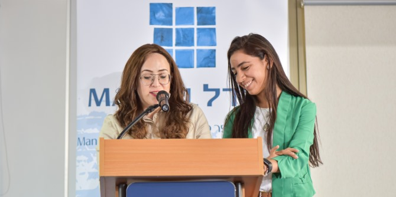

The fellows of Cohort 26 of presented the results of the projects they developed during the course of the two years of their studies during a two-day event held at the Mandel School for Educational Leadership. “The success of the Mandel Foundation is what its graduates accomplish in the field: improving education, society, and quality of life in Israel," said Moshe Vigdor, director general of the Mandel Foundation–Israel. "Each one of you will light your own beacon, with your projects and the products of your learning, and in this way you will help create a better society and light up the world.”

The 21 fellows of Cohort 26 presented the fruits of their learning journey to an audience comprising their colleagues, their individual tutors and faculty members who supported them over the course of their studies, and experts from the field of education.
The learning experience of the Mandel School includes three main components: honing professional identity by means of in-depth study, clarifying values and worldviews, and formulating a vision; studying content related to the fellows’ professional field of action, including research-based, theoretical, and practice-oriented content; and formulating a practical proposal for an intervention in the field of education.
“Not all the seeds that were sown here over the last two years have already produced shoots,” said Danny Bar Giora, the director of the Mandel School for Educational Leadership. “I have no doubt that what you take with you from the program will have an impact wherever you go and whatever positions you hold. I recommend that you look back in five years' time, and try to answer the question of how much you have succeeded in realizing the dreams you formulated here at the Mandel School.”
Click
here to view the booklet of the areas of interest of the fellows of Cohort 26 (Hebrew).
{kind=link}
{kind=link}
{kind=link}